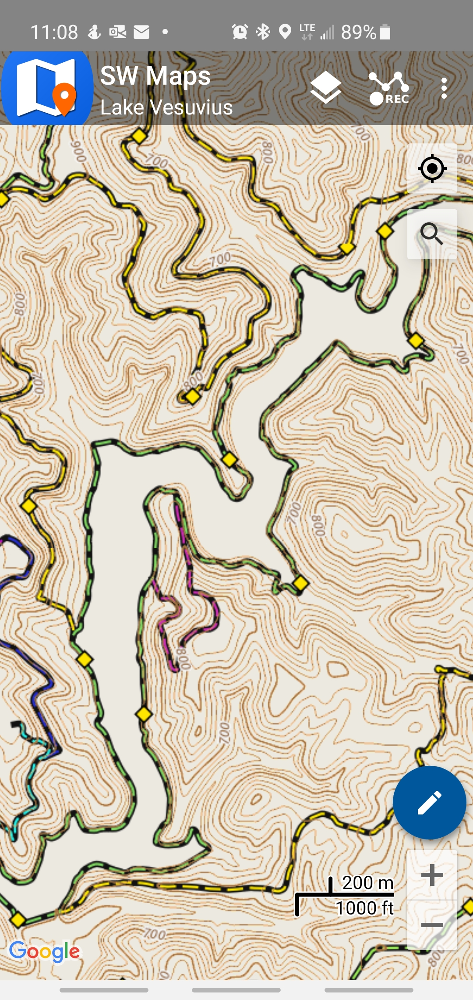

## DIY Raster Tiles with QGIS & GDAL
*Using open source tools to generate orthomosaics and web map tiles from aerial imagery.*
Malcolm Meyer
Ohio GIS Conference 2021
---
# About Me
- BA in Sociology, MA in International Affairs
- 10 Years in the Geospatial Sector
- ❤️❤️❤️
- ☕ Coffee, 🌾 Gardening, 🎸 Music
- ❤️❤️❤️
---

_note:
My inital exposure to open source came from two places, the Agricutlure and the seed savers movement and open pollinated seeds and the deisre to own as many commodore 64 games as possible.
---
## What is Wisdom
> [The goal is] not to develop full confidence in everything you do, but to become confident in the fact that you probably don’t know what you’re doing.
[~ Mark Manson, 2021](https://markmanson.net/newsletters/mindfck-monthly-92)
---
## *High Resolution Orthoimagery is one of the foundations of a Modern GIS.*
_note:
serves as the basis for all our desktop and web maps
---
### Why not Commerical *(Satellite)* Imagery?
- Commercial Imagery is Outdated
- No control over Projections/Transformations
- No control of the tile server
- Low Resolution
- [15cm Native Imagery - Umbra](https://www.geospatialworld.net/news/radar-satellite-startup-umbra-plans-to-capture-imagery-with-15-cm-resolution/)
- [15cm Maxar Upscaled Imagery](https://blog.maxar.com/earth-intelligence/2020/introducing-15-cm-hd-the-highest-clarity-from-commercial-satellite-imagery)
_note:
I am going to show three screenshots taken from three map imagery providers, all in the same day earlier this year and then we can compare these with our locally sourced imagery
---
### Bing Maps (~2016)

---
### Google Maps (~2018)

---
### Esri/Mapbox (Maxar ~2019)

---
### Local 2020 Aerial

---
## Why **FOSS** Image Processing
- No license needed and runs on any machine
- Full control of the mosaic to tile pipeline
- Full control over the tile server
- You get to learn more about how web maps work
- You want to plan a mission to Mars
_note:
We know we want to use our own imagery, but why use open source tools for image processing?
in some instances the Esri solutions were faster to run, in others the open source solution...but for the main orthomosaic COG, gdal_translate was several days faster and created an output tiff
---
## Even More Reasons

---
## Simple Deployment
### **The output can be deployed on any static web host or CDN***
**In some instances it will be advantageous to use a single mbtiles file (sqlite db) instead of a directory of tiles.*
---
## Tools are **Open Source**
[](https://mars.nasa.gov/maps/)
---
## Imagery Pipeline
- 1 **Raw TIFF** `.tif`
- Available from OSIP
- 2 **Mosaic** `.vrt`
- Intermediate File
- 3 *Cloud Optimized GeoTIFF* `.tif`
- Used in Desktop GIS
- 4 *Raster Tiles* `.mbtiles`
- Used in Web Maps
- 5 *Tile Server*
---
## Virtual rasters
Supported in ArcMap, ArcGIS Pro and QGIS.
> [.vrt] is a file format created by the Geospatial Data Abstraction Library (GDAL). It allows a virtual dataset to be derived from other datasets that GDAL can read.
[ArcGIS Pro Supported Raster Formats](https://pro.arcgis.com/en/pro-app/latest/help/data/imagery/supported-raster-dataset-file-formats.htm)
---
## Cloud Optimized GeoTIFF
> A regular GeoTIFF file, aimed at being hosted on a HTTP file server, with an internal organization that enables more efficient workflows on the cloud.
---
## Raster Tile Basics
*Web Maps are usually in Web Mercator EPSG:3857*

Each zoom level is a directory, each column is a subdirectory, and each tile is an image.
---
## MBTiles
> An sqlite database consisting of a `metadata` table and a `tiles` table stored in TMS format.
|zoom_level|tile_column|tile_row|tile_data|
|-|-|-|-|
|zoom level|x coord|y coord|image as blob|
|15|8858|20330|blob|
---
#### Carta do Mundo de Mercator (1569)
[]((https://en.wikipedia.org/wiki/Mercator_1569_world_map#/media/File:Mercator_1569.png))
_note:
In 1569, Mercator published his epic world map. This map, with its Mercator projection, was designed to help sailors navigate around the globe. They could use latitude and longitude lines to plot a straight route. ... Geradus Mercator's world maps flattened the spherical planet to make it easier to display.
---
## The 'Mercator' Projection
> Firstly, to spread on a plane the surface of the sphere in such a way that the positions of places shall correspond on all sides with each other, both in so far as true direction and distance are concerned and as correct longitudes and latitudes...
---
## On Cartography
> ...the limitations of ancient geography be not unknown and that the honour which is due to past centuries be given to them.
~ Gerardus Mercator, 1569
---
## Mercator Distortions

[True Size](https://thetruesize.com/)
---
## Image Processing Tools
### **GDAL**
- gdalinfo
- gdalbuildvrt
- gdal_translate
- gdalwarp
---
## Raster Tiling Tools
- gdal2tiles.py
- QGIS Generate xyz tiles (files or mbtiles)
- *gdal_translate (mbtiles)*
---
## Hosting Options
- COG
- Terracotta, Titiler (Python)
- XYZ Folder Tree
- *Any web host*
- MBTiles
- mbtileserver (Go)
- wmts-server (NodeJS)
- many more...
---
### A Note on File Size (z21)
|Source|Files|Format|Size|
|-|-:|-|-:|
|Raw Tiff|39,985|TIFF|1150 GB|
|Esri Export|4|TIFF/LERC|620 GB|
|gdal_translate COG|1|TIFF/JPG|**82 GB**|
|ArcGIS Cache|1,316|PNG,JPG|*101 GB*|
|Raster Tiles|11,511,665|PNG|851 GB|
|Raster Tiles|11,511,665|JPG|120 GB|
|MBTiles z20|1|PNG|200 GB|
---
## OverZoom in AGOL
> OverZoom is not consistent between mapping APIs, so managing this at the server level allows us to enable overzoom for all maps.
[AGOL Cache](https://tiles.arcgis.com/tiles/CRjnKyCe3OfYTMC3/arcgis/rest/services/2020_Fairfiled_3857_Cache/MapServer)
[AGOL Example](https://lancastergis.maps.arcgis.com/home/webmap/viewer.html?webmap=9d2c02ea2e9e49a3ad248df1da8d14b1)
---
## Custom WMTS Tile Server
### WMTS Endpoint & OverZoom
> Take a tile at zoom level 20, resize it, slice it up and serve it back to the client!
---
## OverZoom Example


---
## Viewing MBTiles on Android
- Input/Mergin
- MapTiler
- **SWMaps**
- QField
---

---
# BREAK
---
## Let's Get Coding
*For those wanting to follow along.*
- Have QGIS ^3.x installed and working
- Have gdal installed and working
- Open OSGeo4W Shell
- Type ``gdalinfo --version``
- Return ~ ``GDAL 3.3.1, released 2021/06/28``
- Obtain a copy of the sample rasters
---
### The Process
```JavaScript
Explore raster metadata with gdalinfo.
Verify the accuracy of the data in QGIS with NGS ground control points.
Create a Mosaic with gdalbuildvrt (force NAD83 2011 SP South).
Create the COG with gdal_translate.
Examine the output in QGIS.
Create another VRT in WebMercator.
Generate Raster Tiles with gdal2tiles, gdal_translate, and QGIS.
Serve the raster tiles with wmts-server.
View the mbtiles file on mobile with SW Maps.
```
---
## gdal-info
gdalinfo --version
> GDAL 3.3.1, released 2021/06/28
gdalinfo OSIP\BS921630.tif
> Lots of Metadata
---
## Accuracy Validation

---
## NGS Marker in Person

---
## Create the Mosaic
Create the mosaic in the native projection, adding in our own alpha band.
gdalbuildvrt -b 1 -b 2 -b 3 -addalpha mosaic.vrt OSIP/*.tif
---
## Transformations
> We need our data in NAD 1983 (2011) EPSG:6551 and WebMercator EPSG:3857, but the imagery is in EPSG:3754!
_note:
If you are using NAD83 not 2011, so 3754 or 3753 you may run into projection and transformation issues. See me later for ideas.
"...the horizontal discrepancy between the NAD 83 (CORS93) and NAD 83
(HARN) positions for a control point is almost always less than 10 cm, and the horizontal
discrepancy between any two NAD 83 (CORSxx) positions for a control point is almost
always less than 2 cm." ~ https://www.fs.fed.us/GRAIP/downloads/GPS/Understanding%20the%20Evolution%20of%20WGS%201984%20and%20NAD%201983%20(Rev2).pdf
---
## Create the Cloud Optimized GeoTIFF
gdal_translate mosaic.vrt cog.tif ^
-a_srs EPSG:6551 ^
-of COG ^
-co RESAMPLING=CUBIC -co COMPRESS=JPEG -co BIGTIFF=YES -co NUM_THREADS=ALL_CPUS
*The `-a_srs` option assigns an output projection without performing a transformation.*
_note:
Create the COG using JPEG compression and force the NAD 1983 projection without performing a transformation. The difference between 3754 and 6551 is basically null. Optionally you can use `gdalwarp` and use the default transoformation or provide your own.
This is the file that our desktop users will load onto their machines.
The COG format is purpose built for use over low bandwidth connections, so it is perfect for using over a city-wide file-share network. In testing it is faster than loading a mosaic in our enterprise SQL database.
"...the horizontal discrepancy between the NAD 83 (CORS93) and NAD 83
(HARN) positions for a control point is almost always less than 10 cm, and the horizontal
discrepancy between any two NAD 83 (CORSxx) positions for a control point is almost
always less than 2 cm." ~ https://www.fs.fed.us/GRAIP/downloads/GPS/Understanding%20the%20Evolution%20of%20WGS%201984%20and%20NAD%201983%20(Rev2).pdf
gdal_translate mosaic.vrt cog.tif \
-a_srs EPSG:6551 \
-of COG \
-co RESAMPLING=CUBIC -co COMPRESS=JPEG -co BIGTIFF=YES -co NUM_THREADS=ALL_CPUS
---
## Validate the COG

[http://cog-validate.radiant.earth/html](http://cog-validate.radiant.earth/html)
---
## Convert to WebMercator
> The default GDAL/Proj transformation from the NAD 1983 datum to WGS 1984 datum is null, and the only other option does not exactly match the default option in our commercial software.
---
#### *GDAL NAD 1983 2011 to WGS 1984 3*
+x=-0.991 +y=1.9072 +z=0.5129 +rx=-0.0257899075194932
+ry=-0.0096500989602704 +rz=-0.0116599432323421
#### **Esri ITRF00 (Default NAD83 <> WGS84)**
0.9956,1.9013,0.5215,0.025915,0.009246,0.011599,-0.00062
[geographic transformations](https://desktop.arcgis.com/en/arcmap/latest/map/projections/pdf/geographic_transformations.pdf)
[proj definitions](#/12)
---
## Spurious Precision
> It’s the classic problem of spurious precision...The problem we’re trying to solve is topological accuracy, not absolute accuracy. ~ Utah Geospatial Resource Center
_note:
GIS is a representation of the world, not an exact replica - if you need absolute accuracy you might be at the wrong conference - 99% percent of GIS folks are not licensed surveyors
---
## Proj4 String
Replacement for the default NAD83 datum transformation definition in GDAL.
+proj=lcc +lat_0=38 +lon_0=-82.5 ^
+lat_1=40.0333333333333 +lat_2=38.73333333333 ^
+x_0=600000 +y_0=0 +ellps=GRS80 ^
+towgs84=-0.9956,1.9013,0.5215,0.025915,^
0.009246,0.011599,-0.00062 ^
+units=us-ft +no_defs
---
## Create a VRT in 3857
gdalwarp mosaic.vrt web.vrt ^
-t_srs EPSG:3857 ^
-s_srs "+proj=lcc +lat_0=38 +lon_0=-82.5 +lat_1=40.0333333333333 +lat_2=38.7333333333333 +x_0=600000 +y_0=0 +ellps=GRS80 +towgs84=-0.9956,1.9013,0.5215,0.025915,0.009246,0.011599,-0.00062 +units=us-ft +no_defs" ^
-dstalpha ^
-et 0 ^
-r lanczos ^
-of VRT ^
-overwrite
`-et`: error threshold
_note:
there is no warping happening here, just the directions on how to project the raster
gdalwarp mosaic.vrt web.vrt \
-t_srs EPSG:3857 \
-s_srs "+proj=lcc +lat_0=38 +lon_0=-82.5 +lat_1=40.0333333333333 +lat_2=38.7333333333333 +x_0=600000 +y_0=0 +ellps=GRS80 +towgs84=-0.9956,1.9013,0.5215,0.025915,0.009246,0.011599,-0.00062 +units=us-ft +no_defs" \
-dstalpha \
-et 0 \
-r lanczos \
-of VRT \
-overwrite
---
## Create the Raster Tiles
- gdal2tiles.py
- QGIS Generate XYZ Tiles (mbtiles)
- *gdal_translate*
---
## gdal_translate
> Create the MBTiles at zoom level 20 `ZOOM_LEVEL_STRATEGY=LOWER` with cubic resampling.
gdal_translate -of MBTILES ^
--config GDAL_NUM_THREADS ALL_CPUS ^
-co ZOOM_LEVEL_STRATEGY=LOWER ^
-co RESAMPLING=CUBIC ^
web.vrt tiles.mbtiles
_note:
gdal_translate -of MBTILES \
--config GDAL_NUM_THREADS ALL_CPUS \
-co ZOOM_LEVEL_STRATEGY=LOWER \
-co RESAMPLING=CUBIC \
web.vrt tiles.mbtiles
---
## gdaladdo
> Create overview tiles until the smallest tile that covers the image is 256x256.
gdaladdo tiles.mbtiles -r average
# nearest,average,bilinear,cubic,cubicspline,lanczos...
# average is marginally faster
---
[Hosted Tiles](https://lancastergis.maps.arcgis.com/home/webmap/viewer.html?webmap=dc58691692d14134a2e1a5667f010fca)
---
## gdal2tiles
python.exe gdal2tiles.py -xyz -v source.tif outputFolder
_note:
Use the latest gdal2tiles.py python script downloaded from the gdal GitHub site to cut the tif into a folder of high resolution raster tiles for use in web mapping. There are similar scripts that will output to mbtiles, output to geopackage, or write to JPG files. This script was originally written by the developer of MapTiler. The default for this updated script is to use all the availabel cpu cores, so be careful when running it. Set the --processes to something you can live with, such as half the available cores. A maximum zoom limit of 20 seems to be a good limit, which is about street level, however if you want to use them in AGOL you will need to go to zoom 21 as AGOL does not overzoom tiles.
---
## Hosting & Serving
> Copying millions of small files can take a very long time, however deployment is as simple as pointing a web server to a folder.
#### **Advantages of MBTiles**
* One file vs millions of files
* Complete control of the tile server
---
### MBTile Servers
- [mbtileserver](https://github.com/consbio/mbtileserver)
- Written in GO, deployed via a windows exe file
- [wmts-server](https://github.com/reyemtm/wmts-server)
- NodeJS server with WMTS endoints and 3x overzoom
- Many others...
---
#### References
- https://www.researchgate.net/publication/321064657_Web_mercator_and_raster_tile_maps_two_cornerstones_of_online_map_service_providers
- https://blog.mastermaps.com/2008/03/generating-map-tiles-with-gdal2tiles.html
- http://build-failed.blogspot.com/2012/11/zoomable-image-with-leaflet.html
- https://alastaira.wordpress.com/2011/07/11/maptiler-gdal2tiles-and-raster-resampling/
- https://pvanb.wordpress.com/2017/03/06/raster2mbtiles/
- https://github.com/ecometrica/gdal2mbtiles
- http://emapr.ceoas.oregonstate.edu/pages/education/how_to/how_to_tws.html
- http://www.perrygeo.com/lazy-raster-processing-with-gdal-vrts.html
- https://jeromegagnonvoyer.wordpress.com/2015/08/06/merging-multiple-mbtiles-together/
---
# Thanks!
### *Malcolm Meyer*
**@getBounds** on twitter and the web